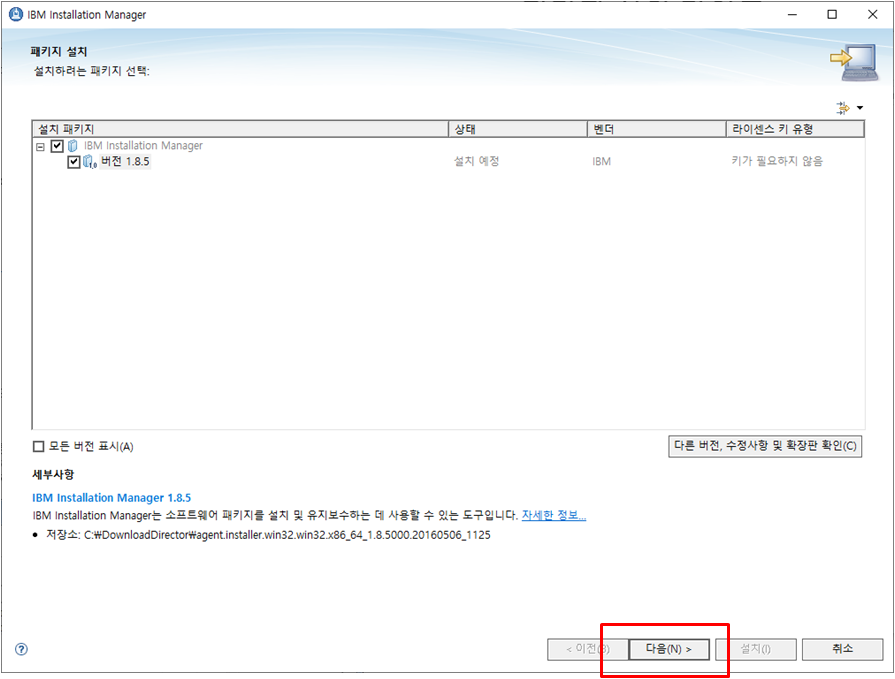
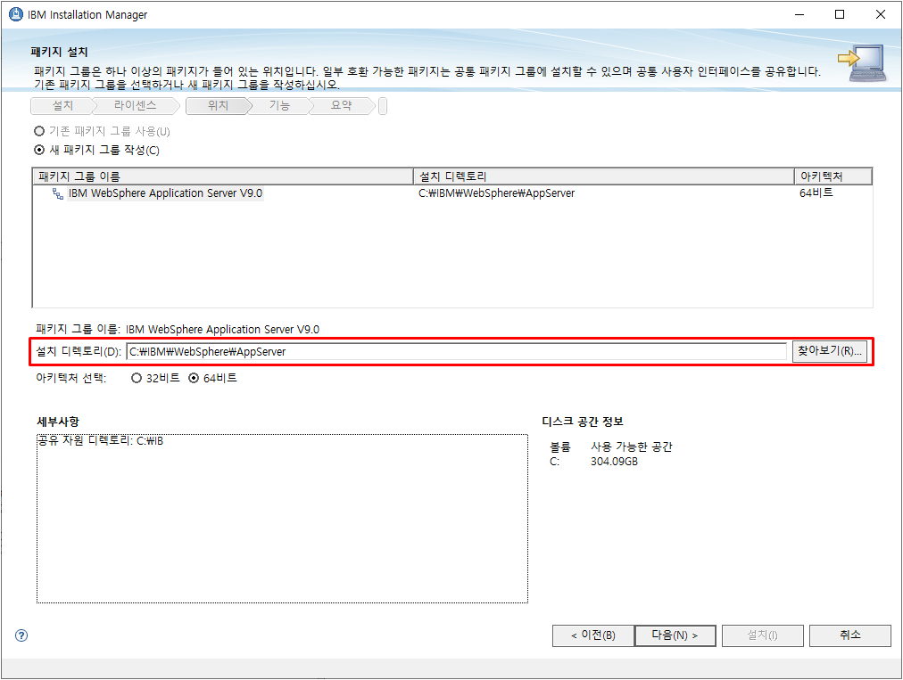
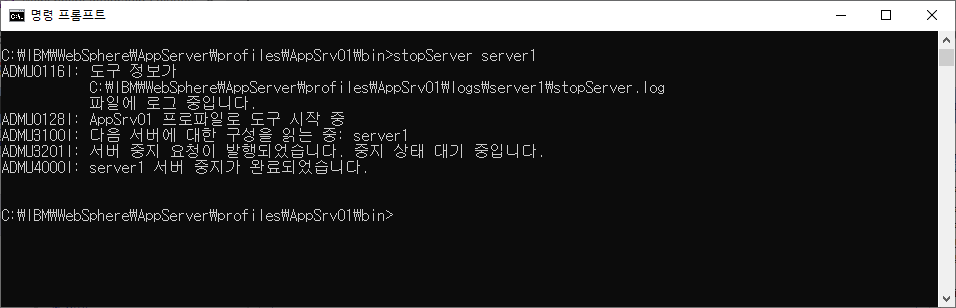

개요
본 문서는 Altibase와 WebSphere를 연동하여 운영하기 위한 가이드 문서로써 WebSphere를 설치하는 방법 및 환경변수 설정방법, Altibase와 WebSphere를 연동하는 방법에 대해서 기술한다.
본 문서는 Altibase 7.1.0 과 WebSphere 9.0 버전에 대해 기술한 문서이다.
WebSphere 설치
본 장에서는 WebSphere를 다운로드 받고 설치하는 과정과 WebSphere의 디렉토리 구조에 대하여 기술하고, WebSphere를 구동하고 종료하는 방법에 대하여 기술한다.
기본 설치
WebSphere 패키지 다운로드
WebSphere 를 다운 받기 위해서는 IBM Installation Manager를 먼저 설치 해야 한다.
(본문서는 IBM Installation Manager 1.8.5 버전을 기준으로 작성되었다. )
IBM Installation Manager 다운로드 링크는 아래와 같다.
IBM Installation Manager 를 다운받기 위해서는 IBM에 가입하고 java가 설치 되어 있어야 한다. 또한 인터넷 익스플로어를 통해서만 다운로드가 가능하다.
다운로드 경로와 포트등을 설정하고 OK 를 선택한다.

다운로드 받은 위치에서 받은 파일의 압축을 해제하고 설치(install.exe)를 진행한다.


IBM Installation Manager 설치가 완료되면 시작화면 메뉴에서 파일->환경설정 에서 저장소 추가 버튼을 누른다.

저장소 URL은 다음과 같다.

다시 초기화면에서 설치 버튼을 누르면 패키지 선택 메뉴가 나오고 IBM WebSphere Application Server를 선택한다.

설치 경로를 선택한다.


설치완료 후에 WebSphere Customization toolbox 9.0 자동실행 되면 작성 버튼을 누른다.
애플리케이션 서버를 선택한다.

프로파일 작성을 선택 한다.
관리보안은 선택사항 으로 선택하지 않으면 공란으로 로그인 된다.

작성이 완료되면 설정된 프로파일의 정보를 확인할 수 있다.

설치 내용을 확인 하면 아래와 같다.

WebSphere 디렉토리 구조
WebSphere를 설치하면 다음과 같은 디렉토리를 확인할 수 있다.
설치 시(C:\IBM에 설치)에 아무런 변경 없이 WebSphere를 설치했다면 위의 그림에 표시된 것처럼 C:\IBM\WebSphere\AppServer의 경로가 환경변수인 WAS_INSTALL_ROOT가 되며,
JDBC 프로바이더 설정 시에 클래스 경로를 지정할 때도 ${WAS_INSTALL_ROOT}를 이용할 수 있다.
${WAS_INSTALL_ROOT} 디렉토리를 살펴보면 다양한 디렉토리들이 생성되어 있는 것을 확인할 수 있다.
본 문서에서는 WebSphere 사용할 때 꼭 참고해야 하는 디렉토리들에 대해서만 기술한다.
WebSphere 에서는 Profile 이라는 개념을 사용한다. 제품에 관련하여 모든 사용자가 공유하며 사용하는 파일을 바이너리 파일이라고 하며,
Profile은 각각의 사용자가 자신의 환경에 맞게 Customizing 한 환경과 설정 파일들이 저장된 것을 의미한다.
아래의 그림처럼 Profiles 디렉토리에는 사용자가 생성한 각각의 Profile들이 관리된다.
Profiles 디렉토리에 생성된 Profile 들 중에 한 가지를 살펴보면, 다음과 같은 구조로 구성되어 있다.(어떤 Profile을 확인해도 디렉토리 구조는 동일하다) 
디렉토리 | 설명 |
bin | 서버 실행/종료 관련된 스크립트 등 각종 실행 스크립트 제공 |
config | resource.xml 등 Profile 에서 사용하는 설정들을 xml 형태로 제공 |
configuration | 이클립스 기반의 osgi나 런타임 관련 설정 파일 제공 |
etc | 보안 관련된 Key 값들과 Key DB 제공 |
installableApps | 설치해서 유용하게 사용될 수 있는 Application 들이 제공 |
logs | SystemOut.log, SystemErr.log 등 서버 별로 각각의 log를 제공 |
properties | WAS에서 사용하는 각 Properties를 제공 |
tranlog | 장애에 의한 트랜잭션 복구를 위해 트랜잭션 로그를 제공 |
WebSphere를 사용하면서 웹 관리콘솔을 이용하여 환경 설정을 변경하면 실제로는 Config 디렉토리에 있는 Resource.xml 파일에 기록되고, 수정된다.
이 Resource.xml 파일은 "cell", "node", "server" 별로 각각의 디렉토리에 존재한다. "cell", "node", "server" 에 대한 설명은 다음 장의 "JDBC 프로바이더 설정"에서 참고한다.
WebSphere 구동
WebSphere 설치가 완료되면 스크립트 파일을 이용하여 WebSphere를 구동할 수 있다.
커맨드 창을 열고 WebSphere 디렉토리 중 현재 설치한 프로파일의 bin 디렉토리로 이동하여 시작 스크립트 파일을 실행한다.
서버를 시작하는 명령어는 "startServer.bat" 파일이다. (예 D:\IBM\WebSphere\AppServer1\profiles\AppSrv01\bin)
WebSphere 설치 후에 WAS 서버 이름은 기본으로 "server1"으로 되어 있다.
따라서 해당 스크립트 파일이 있는 위치로 이동하여 커맨드 창에 "startServer server1" 라고 입력하면 WAS 서버가 구동된다. 
위의 그림처럼 서버가 e-business용으로 열렸다는 메시지와 프로세스 ID 가 출력이 되었다면 정상적으로 WebSphere가 구동된 것이다.
정상 구동된 후에는 웹 관리콘솔 환경으로 접속하여 WebSphere를 관리할 수 있다.
웹 브라우저에 http://SERVER_IP:9060/ibm/console 을 입력하여 웹 관리콘솔에 접속한다. (여기서 SERVER_IP는 WebSphere를 설치한 서버의 IP를, 9060은 관리콘솔을 위한 서비스 포트이다.)
위와 같은 로그인 화면이 나오면 아무런 사용자나 입력하고 실제 관리콘솔로 들어간다.
WebSphere 설치 시에 관리보안 항목을 체크하고 ID와 Password를 설정한 경우에는 해당 ID로 로그인하면 된다.
관리콘솔의 왼쪽 메뉴 중 [서버] > [서버 유형] > [WebSphere Application Server]를 선택하면 현재 구동중인 노드 정보를 확인할 수 있으며, 자세한 정보는 해당 노드를 선택하면 확인할 수 있다. 
오른쪽 하단의 [포트] 메뉴를 클릭하면 WAS 서버에서 사용하는 포트를 확인 및 수정할 수 있다.
관리콘솔의 서비스포트(9060)과 어플리케이션 서비스포트(9080) 등을 확인하고, 필요한 경우 수정하여 사용하도록 한다.
WebSphere 종료
WebSphere를 종료하는 방법은 커맨드 창에서 서버를 시작했던 위치로 이동하여 종료 스크립트 파일인 "stopServer.bat" 를 실행한다.
종료 시에도 구동 시와 마찬가지로 "stopServer server1" 이라고 실행하면 서버가 종료된다.

JDBC 드라이버 설정
본 장에서는 Altibase와 WebSphere를 연동하여 사용하기 위한 설정 방법에 대해서 설명한다.
Altibase JDBC 드라이버 획득
Altibase에서 제공하는 JDBC driver는 Altibase.jar 이다. 이 파일은 Altibase가 설치되어있는 서버의 $Altibase_HOME/lib 디렉토리 안에 존재한다.
Altibase JDBC 드라이버 버전 확인
Altibase JDBC driver 버전을 확인하는 방법은 다음의 명령어를 수행하면 된다.
$ java –jar Altibase.jar |
연동하려는 Altibase DB 서버와 Altibase JDBC Driver가 호환 가능한지 확인을 위해 Altibase DB 서버 버전 확인이 필요하다. 이때, Altibase DB 서버의 cm protocol version과 Altibase JDBC Driver의 CMP가 동일하면 호환 가능하다.
$ Altibase -v |
JDBC 드라이버 적용
WebSphere 에서 Altibase와 연동하기 위해 Altibase JDBC 드라이버를 적절한 곳에 위치시켜야 한다.
Altibase.jar 파일을 WebSphere의 디렉토리 중에서 ${WAS_INSTALL_ROOT}\universalDriver\lib 에 위치시켜준다.
Altibase와 WebSphere 연동(AltibaseConnectionPool)
본 장에서는 Altibase와 WebSphere를 연동하는 방법에 대하여 기술한다.
WebSphere 에서 Altibase와 연동하기 위한 Connection 소스를 제공하지 않기 때문에 Altibase 에서 제공하는 AltibaseConnectionPool 을 이용하여 WebSphere와 연동해야 한다.
JDBC 제공자 설정
Altibase와 WebSphere를 연동하기 위해서 가장 먼저 수행할 작업은 JDBC 제공자 설정이다.
Altibase JDBC 드라이버를 WebSphere에 설정함으로써 Altibase와 WebSphere를 연동해서 사용할 수 있다.
WebSphere 웹 관리콘솔 메뉴 중 [자원] > [JDBC] > [JDBC 제공자]를 선택한다. 
JDBC 제공자 설정하기 전에 자원 정의를 볼 수 있는 레벨을 지정하기 위해 범위를 설정하는데, 범위는 "셀"로 설정한다.
"셀"로 범위를 정하면 그 밑의 단위인 "노드", "서버" 단위에서도 모두 참조 가능한 자원이 만들어지지만, "서버" 단위로 만들게 되면 해당하는 서버에서만 참조가 가능하며 다른 서버에서는 해당 자원을 참조할 수 없다.
범위를 지정한 후, [새로 작성]을 클릭하여 Altibase JDBC 드라이버를 설정한다. 
JDBC 제공자 설정 시에 "데이터베이스 유형" 은 사용자 정의, "구현 클래스 이름"은 Altibase.jdbc.driver.AltibaseConnectionPoolDataSource, "이름"은 Altibase JDBC Provider 로 설정하고 다음 단계로 넘어간다.
(Altibase 6.1.1 이하 버전에서는 Altibase.jdbc.driver.ABConnectionPoolDataSource 을 사용하여 접속하여야 한다.)
새로운 JDBC 프로바이더를 작성한 후에 데이터베이스 클래스 경로를 지정하는데, 클래스 경로는 Altibase.jar 파일이 있는 위치를 입력해준다. 
앞 장에서 설명한 것처럼 Altibase.jar 파일은 해당 서버의 ${WAS_INSTALL_ROOT}\universalDriver\lib 디렉토리에 위치시키므로 해당 위치를 클래스 경로로 지정한다.
클래스 경로까지 지정을 하면 JDBC 세공자 설정은 완료된다. 자신이 설정한 JDBC 제공자의 요약을 확인하여 수정할 내용이 있으면 수정하고, 없다면 완료한다.
데이터소스 설정
데이터소스는 Altibase와 WebSphere 의 엑세스를 위한 정보들을 관리하는 객체이며, 어플리케이션은 해당 데이터소스를 통하여 Altibase와 연결을 한다.
WebSphere 메뉴 중 왼쪽의 [자원] > [JDBC] > [데이터소스]를 선택한다. 
JDBC 프로바이더 설정 시와 동일하게 범위를 "셀"로 지정하고 새로운 데이터소스를 작성한다.
"데이터소스 이름" 과 "JNDI 이름"을 설정한다. 본 문서에서는 데이터소스 이름을 "altitest" 로, JNDI 이름을 jdbc/altitest 로 설정했다.
JNDI 이름은 연동 테스트 시에 테스트 예제에서 lookup 할 때 사용된다.
데이터소스 이름과 JNDI 이름을 설정하고 다음 단계로 넘어가면 JDBC 제공자를 선택하게 되는데, 기존에 생성했던 JDBC 제공자를 선택한다.
만약, JDBC 제공자를 생성하지 않았다면 이 단계에서 새로 JDBC 제공자를 생성하여 사용할 수도 있다.
데이터 스토어 헬퍼 클래스는 지정되어 있는 이름을 그대로 사용한다.
다음으로 보안 관련 별명을 설정하는 부분이 나오는데, 아직 J2C를 설정하지 않았기 때문에 그냥 다음 단계로 넘어간다. 보안 별명 설정이 끝나면 데이터 소스 작성을 위한 기본 작업은 완료된다.
마지막으로 요약 단계에서 데이터소스 설정이 올바르게 되었는지 확인하고 완료한다.
데이터소스 설정을 완료하면 다음과 같이 생성한 데이터소스를 확인 할 수 있으며, 생성한 데이터소스를 클릭하여 세부적인 데이터소스 설정을 한다. 
Altitest 데이터소스를 클릭한 후, 다음 화면의 메뉴 중에서 [사용자 정의 특성]을 클릭하여 세부적인 데이터소스 항목을 설정한다. 
[사용자 정의 특성]에 들어가면 세부적인 데이터소스 설정을 위한 항목들이 나열되어 있다. 이 항목들 중에서 시스템 구성에 필요한 항목들을 원하는 수치로 설정한다.
본 문서에서는 Altibase와 WebSphere를 연동하는데 필요한 최소한의 항목들만 설정한다. 
초기에는 항목들의 값들이 설정되어 있지 않기 때문에 아래의 표를 참조하여 값들을 설정해준다. () 안의 설정 값은 본 문서에서 설정하는 예시 값이다.
항목 | 설정 값 |
databaseName | Altibase를 구동한 DB 이름(mydb) |
serverName | Altibase가 설치된 서버IP(192.168.1.35) |
user | Altibase에 접속할 user명(sys) |
password | Altibase에 접속할 password(manager) |
portNumber | Altibase에 접속할 포트번호(20911) |
위의 항목들을 설정한 후에, 연결 테스트를 해보면 다음과 같이 연결 테스트에 성공했다는 메시지가 출력된다. 이 메시지가 출력되면 Altibase와 WebSphere의 기본적인 연결은 성공한 것이다.
어플리케이션 등록 및 설정
WebSphere 에서는 EAR, WAR 모듈로 작성된 어플리케이션을 등록하여 사용할 수 있다.
본 절에서는 WAR 모듈을 WebSphere에 등록한 후, Altibase와 연동하기 위한 설정 방법에 대해서 기술한다. 
WebSphere 웹 관리콘솔의 왼쪽 메뉴 중 [애플리케이션] > [새 응용프로그램]을 선택한 후, [새 엔터프라이즈 응용프로그램]을 클릭하여 WAR 모듈을 등록한다.
작성된 WAR 모듈의 경로를 지정하여 WebSphere에 등록한다.
경로를 지정하고, 다음 단계인 [응용 프로그램 설치 준비]에서는 "빠른 경로"를 선택한 후, 다음 단계로 넘어간다.
[설치 옵션 선택] 메뉴에서는 응용프로그램 이름이나 다른 항목들을 변경할 수 있지만 본 문서의 테스트에서는 그냥 넘어간다. 

[서버에 모듈 맵핑]에서 현재 한 개의 모듈만 생성이 되어 있기 때문에 그냥 넘어가도록 한다. 만약 여러 개의 모듈을 생성한 후, 특정 모듈만 서버에 맵핑 하는 경우에는 특정 모듈을 선택해서 "적용" 버튼을 클릭한다. 
가상 호스트 맵핑은 "default_host"로 선택하고 다음 단계로 넘어간다.
컨텍스트 루트 맵핑은 현재 설정하고 있는 WAR 모듈의 루트를 지정하는 단계이다. 사용자가 원하는 컨텍스트 루트를 지정하면 WAR 모듈 이름과 상관없이 "컨텍스트 루트 명/jsp 파일명"으로 해당 어플리케이션을 실행할 수 있다. 
컨텍스트 루트 맵핑을 하고 완료를 하면 WebSphere 에서는 자동으로 어플리케이션을 구성하고 설치한다. 설치가 완료되면 [저장]을 클릭해서 구성 내용을 마스터에 저장한다.
마스터에 저장하면 사용하고자 하는 어플리케이션의 구성 및 설치가 모두 완료된다. 하지만 현재는 어플리케이션을 설치만 되어 있는 상태이기 때문에 직접 어플리케이션의 상태를 "시작"으로 변경해줘야 한다.
WebSphere 웹 관리콘솔 메뉴 중 왼쪽의 [애플리케이션] > [애플리케이션 유형] > [WebSphere 엔터프라이즈 애플리케이션]을 선택하면 사용자가 WebSphere에 설치한 어플리케이션을 확인할 수 있다.
"시작" 버튼을 클릭하여 해당 어플리케이션을 시작시키면 다음과 같은 메시지가 출력된다.
어플리케이션이 시작되었으면, 웹 브라우저를 실행시켜서 테스트를 진행한다. 
연동 테스트
Altibase와 WebSphere의 연동 테스트는 위의 절에서 사용한 altitest.war 모듈을 사용한다.
아래의 테스트 예제를 사용하여 이클립스에서 WAR 모듈을 생성하고, WebSphere에 설치해서 테스트를 진행한다.
Test.jsp 생성
다음의 테스트 예제를 jsp 파일로 생성하여 테스트 한다.
<%@ page import="javax.naming.*" %>
<%@ page import="java.sql.*" %>
<%@ page import="javax.sql.*" %>
<%
Connection con=null;
Statement st=null;
ResultSet rs=null;
try
{
InitialContext ctx = new InitialContext();
DataSource ds = (DataSource)ctx.lookup("jdbc/altitest");
con=ds.getConnection();
st=con.createStatement();
rs=st.executeQuery("select * from dual");
while(rs.next())
{
//Thread.sleep(100000);
out.println("TABLE_NAME :" + rs.getString(1)+"<br>");
}
}
catch(Exception e)
{
out.println("Error:" + e.getMessage());
e.printStackTrace();
}
finally
{
if(rs!=null)rs.close();
if(st!=null)st.close();
if(con!=null)con.close();
}
%>
WAR 모듈 생성
테스트에서 사용하는 WAR 모듈은 이클립스를 사용하여 생성하였다.
이클립스를 실행시켜서 [File] > [New] > [Project] 를 선택한 후에 다음의 Wizard 에서 [Web] > "Dynamic Web Project" 를 선택하여 프로젝트 이름을 설정한다.
다음과 같이 프로젝트가 생성이 되면, 위의 샘플 예제를 JSP 파일로 생성하여 "WebContent" 디렉토리 밑에 추가해준다.
Lib 폴더에는 Altibase.jar 파일을 추가해준다. 
JSP 파일과 Altibase.jar 파일을 추가했으면, [File] > [Export] 를 선택하고, [Web] > "War file" 를 선택하여 생성할 경로를 지정해주면 WAR 모듈이 생성된다.
WAR 모듈을 생성한 후에는 위의 절에서 진행한 것처럼 WebSphere에 설치한다.
WAR 모듈의 설치가 완료되고, 상태를 시작으로 변경한 뒤 웹 브라우저를 실행시켜서 다음과 같이 실행한다.
http://서버 IP:어플리케이션 서비스포트/컨텍스트 루트 명/JSP 파일명 |
서버 IP는 WebSphere가 설치된 서버의 IP 주소를,
어플리케이션 서비스포트는 JDBC 프로바이더 설정 시에 확인했던 어플리케이션 서비스포트를(기본적으로 9080 포트 사용),
컨텍스트 루트 명은 어플리케이션 등록 시에 지정한 컨텍스트 루트 명을, JSP 파일명은 WAR 모듈에 포함되어 있는 JSP 파일명을 입력해준다.
테스트에서 진행한 실행 구문은 다음과 같다.
http://127.0.0.1:9080/altiweb/test.jsp |
FailOver Configuration
본 장에서는 Altibase가 제공하는 FailOver 기능을 이용하여 WebSphere와 연동하는 방법에 대해 기술한다.
FailOver
WebSphere은 FailOver 기능을 제공하지 않는다. 하지만 Altibase 5.3.3 버전부터 FailOver 기능을 제공하기 때문에, Altibase의 FailOver기능을 이용하면 FailOver 구현이 가능하다.
사용구문은 다음과 같다.
jdbc:Altibase://서버 IP:DB포트번호/DB이름?AlternateServers=(서버 IP:DB 포트번호)&ConnectionRetryCount=3&ConnectionRetryDelay=3&SessionFailOver=off |
FailOver 관련 속성
FailOver 관련 속성은 다음과 같다.
항목 | 속성 |
AlternateServer | 장애 발생시 접속하게 될 가용 서버를 나타내며 (IP Address1:Port1, IP Address2:Port2,...) 형식으로 기술한다. |
ConnectionRetryCount | 가용 서버 접속 실패 시, 접속 시도 반복 횟수 |
ConnectionRetryDelay | 가용 서버 접속 실패 시, 다시 접속을 시도하기 전에 대기하는 시간(초단위) |
SessionFailOver | STF(Service Time Fail-Over)를 할 것인지 여부를 나타낸다. |
CTF 및 STF 의 구현방법은 Altibase FailOver 기술문서를 참조한다.
FailOver 적용
FailOver 기능을 사용하기 위해서는 위에서 언급한 FailOver 구문을 아래의 그림처럼 데이터소스 설정 시에 "url" 항목에 입력해야 한다. 
데이터소스를 설정한 후에 다음의 테스트 예제를 WAR 모듈로 작성하여 WebSphere 에서 테스트 해본다.
테스트를 진행하면 로컬 DB의 시간이 화면에 출력되며, 사용자가 임의로 로컬 DB를 종료시키면 대체 DB(AlternateServer)로 FailOver 하여 대체 DB의 시간을 화면에 출력해준다.
Test.jsp
<%@ page import="java.sql.*"%>
<%
javax.sql.DataSource ds = null;
javax.naming.InitialContext ctx=null;
ctx = new javax.naming.InitialContext();
ds = (javax.sql.DataSource)ctx.lookup("jdbc/Altibase");
Connection conn = ds.getConnection();
DatabaseMetaData dmd = conn.getMetaData();
String query = "select to_char(sysdate,'yyyy/mm/dd hh24:mi:ss') from dual";
Statement stmt = null;
ResultSet rs= null;
for(int i =0;i<1000;i++){
try{
stmt = conn.createStatement();
rs = stmt.executeQuery(query);
if( rs.next() )
{
out.println( "VALUE : " + i+" "+rs.getString(1) + "<br>" );
out.flush();
}
rs.close();
stmt.close();
Thread.sleep(1000);
}catch(SQLException e){
System.out.println(i+" "+e.getSQLState());
Thread.sleep(1000);
//conn = ds.getConnection();
}
}
%>
{kind=link}
{kind=link}
{kind=link}
{kind=link}
{kind=link}
{kind=link}
{kind=link}
{kind=link}
{kind=link}
{kind=link}
{kind=link}
{kind=link}
{kind=link}
{kind=link}
{kind=link}
{kind=link}
{kind=link}
{kind=link}
{kind=link}
{kind=link}
{kind=link}
{kind=link}
{kind=link}
{kind=link}
{kind=link}
{kind=link}
{kind=link}
{kind=link}
{kind=link}
{kind=link}
{kind=link}
{kind=link}
{kind=link}
{kind=link}
{kind=link}
{kind=link}
{kind=link}
{kind=link}
{kind=link}
{kind=link}
{kind=link}
{kind=link}
{kind=link}
{kind=link}
{kind=link}
{kind=link}
{kind=link}
{kind=link}
{kind=link}
{kind=link}
{kind=link}
{kind=link}
{kind=link}
{kind=link}
{kind=link}
{kind=link}
{kind=link}
{kind=link}
{kind=link}
{kind=link}
{kind=link}
{kind=link}
{kind=link}
{kind=link}
{kind=link}
{kind=link}
{kind=link}
{kind=link}
{kind=link}
{kind=link}
{kind=link}
{kind=link}
{kind=link}
{kind=link}
{kind=link}
{kind=link}
{kind=link}
{kind=link}
{kind=link}
{kind=link}
{kind=link}
{kind=link}
{kind=link}
{kind=link}
{kind=link}
{kind=link}
{kind=link}
{kind=link}
{kind=link}
{kind=link}
{kind=link}
{kind=link}
{kind=link}
{kind=link}
{kind=link}
{kind=link}
{kind=link}
{kind=link}
{kind=link}
{kind=link}
{kind=link}
{kind=link}
{kind=link}
{kind=link}
{kind=link}
{kind=link}
{kind=link}
{kind=link}
{kind=link}
{kind=link}
{kind=link}
{kind=link}
{kind=link}
{kind=link}
{kind=link}
{kind=link}
{kind=link}
{kind=link}
{kind=link}
{kind=link}
{kind=link}
{kind=link}
{kind=link}
{kind=link}
{kind=link}
{kind=link}